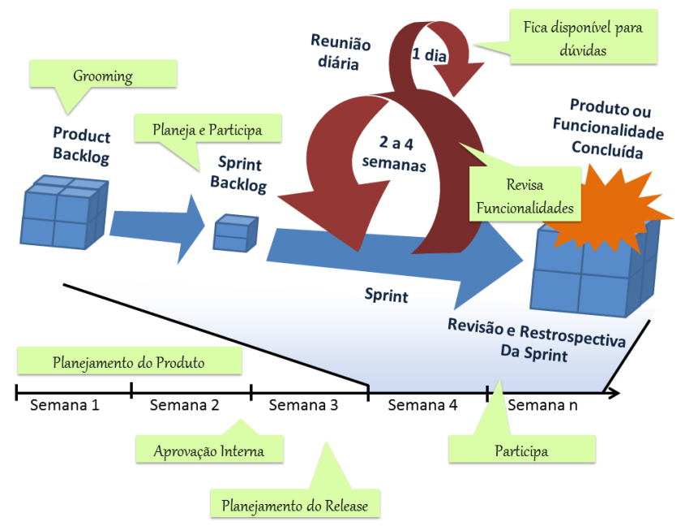
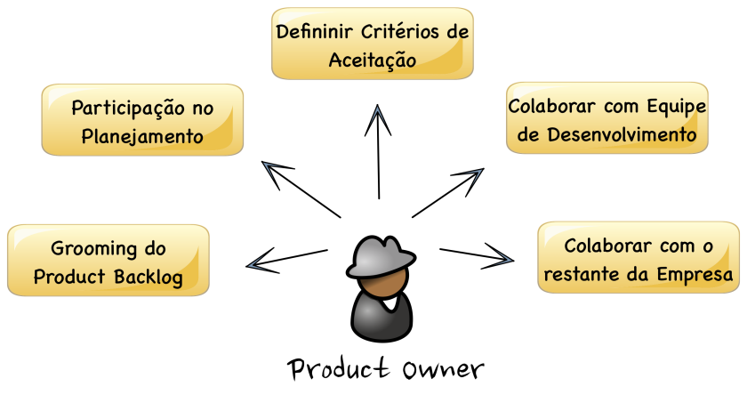

Ele é um facilitador e líder da equipe, ajudando assim É a pessoa responsável por definir o que será construído, garantindo que o produto atenda às necessidades dos clientes e que assim alinhe as estratégias da empresa ao desenvolvimento de forma mais eficaz e prioritária pela equipe. O P.O é responsável por:
Dia a Dia de um Product Owner
 Para ser eficaz na criação e execução da visão, o Product Owner deve ter o conhecimento e domínio do negócio
"É normal que muitas vezes as pessoas tenham necessidades conflitantes, portanto o Product Owner deve ser um bom negociador e sempre buscar um consenso."
Como o Product Owner é o eixo entre a comunidade de interessados no projeto e o resto da Equipe Scrum, esta posição exige uma boa comunicação para transmitir as informações da forma mais apropriada.Um problema frequente em empresas que recém adotam Scrum é que a pessoa selecionada para ser o Product Owner não tem poderes para tomar todas as decisões importantes do projeto. Tal pessoa não deve ser o Product Owner.
O Product Owner também deve estar preparado para tomar as decisões mais duras, como mudanças de escopo, data e orçamento. Estas decisões devem ser tomadas em tempo hábil e não devem ser revertidas sem uma boa razão.Isso não quer dizer que a Equipe Scrum não tem sua parcela de responsabilidade nisso. O ponto aqui é enfatizar que o Product Owner é responsável por se certificar que os recursos estão sendo usados da melhor forma para atingir os resultados de negócio esperado.
"Product Owner é um membro da Equipe de Scrum e, portanto, deve entender que os bons resultados econômicos são impossíveis sem os esforços colaborativos da Equipe Scrum como um todo."
Desta forma, o Product Owner deve trabalhar junto com a Equipe de Desenvolvimento e Scrum Master para que esta parceria resulte em resultados satisfatórios.